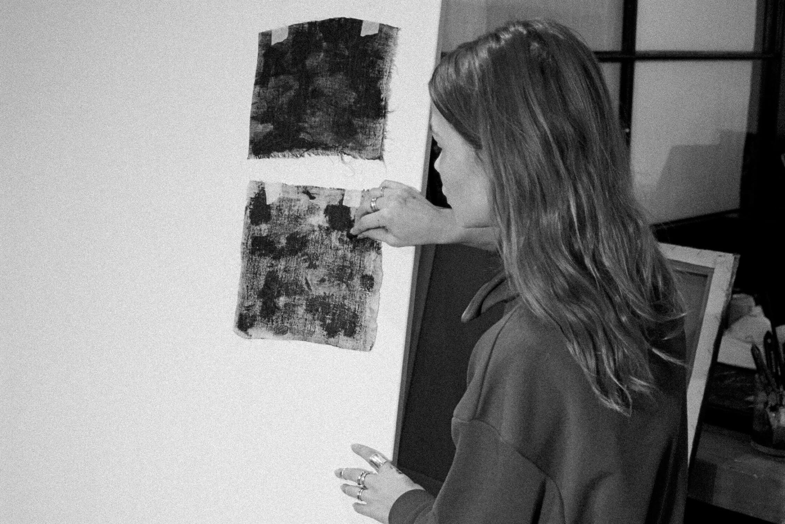

About
Maryse Ceha work arises out of and in the making. Maryse’s work
revolves around the pleasure of making, the wealth of possibilities
inherent in the materials she uses and the power of the visual stories
that reveal themselves to Maryse in the process of making. She is able
to mine an abundantly rich source of possibilities, meaning and
pictorial alternatives, while surfing on that wave of creative energy.
Her work expresses the joy of making discoveries in the making
process. By emerging herself in making art she discovers and
translates a wealth of content. Nevertheless, her work is the result
of a total commitment to visualizing and thereby researching her
world. Furthermore, there is a constant in everything she makes.
Maryse has a fascination with water. For the beauty of the sea, for
the light that slides in and over the water, for the reflections as
the water reflects the light back and the silence when you are
underwater. Water that gives life, that distorts coastlines, that
always precedes the horizon. She describes this as follows:
“As human beings we primarily inhabit the land. the water is an
unknown world and I think that attracts me, the mystery and the
speculations about what lies beneath the surface. The ocean, the
water, is my calming place. I find comfort in the rhythm of the waves.
seeing its vastness as our eyes scan the horizon. trying to comprehend
its endlessness and feeling so small in the middle of its mighty
endlessness. In the deep, sound dissolves into silence, leaving only
the whispers of my own thoughts. I see the deep blue spreading all
around me. this is the realms of sublime nothingness, where the
boundaries between reality and dreams blur. There is something about
getting so far from the world we know, without the distraction. My
mind is free.” Maryse does not make illustrations. Her work
isn’t a pictorial renderingof what she has seen. She is looking for
abstract values. In this regard, sheis aligned with the traditions of
artists such as Yves Klein and Mark Rothkowho introduced color as
subjects in their own right and with the colorfield painterswho
explored the power of color fields as new pictorial spaces. Maryse
alsosucceeds in her work in conveying feelings of stillness, of awe at
the mysteryof the universal.